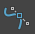

Bezier 曲线是 NURBS 曲线的子集，它由两种类型的控制顶点组成：定位点和切线。定位点位于曲线上并确定切线的原点。切线确定曲线通向相邻定位点时的形状。
添加/移除定位点
将定位点添加到现有曲线
- 选择 Bezier 曲线。
- 在曲线上按住鼠标右键，并从标记菜单中选择“曲线点”(Curve Point)。
- 单击要插入定位点的曲线。
- 选择。
Maya 可使用一对切线将定位点插入曲线。
将定位点附加到现有曲线的端点
- 选择要附加定位点的曲线。
- 选择，或单击“曲线/曲面”(Curves/Surfaces)工具架中的“Bezier 曲线工具”(Bezier Curve Tool)图标 ()。
- 单击曲线中的最后一个定位点。
最后一个定位点始终为曲线的端点，它不是黄色。
- 单击（或单击并拖动）场景中的任何位置。
定位点随即出现并连接到曲线。
移除定位点
- 在曲线上单击鼠标右键，然后从标记菜单中选择“控制顶点”(Control Vertex)。
- 选择定位点。
- 按 Delete 键。
定位点被删除。
注： 不能以移除定位点的相同方式移除切线。有关详细信息，请参见下面的添加/移除切线部分。
添加/移除切线
如果通过单击（而不是单击并拖动）场景创建了一个固定点，定位点默认为不具有任何切线。但是，可以手动添加一对切线。
若要为定位点添加切线
- 选择要添加切线的定位点。
- 按住 Shift 键并单击鼠标右键，然后从“标记菜单”(Marking Menu)中选择“Bezier”或“Bezier 角点”(Bezier Corner)。
- 若要创建一对完整的切线，请选择“Bezier”。
- 若要创建一对断开的切线，请选择“Bezier 角点”(Bezier Corner)。
将显示一对附着到选定定位点的切线。
也可以移除切线来创建锐角。
若要移除切线
- 选择要移除切线的定位点。
- Shift + 单击鼠标右键。
-
将显示一对附着到选定定位点的切线。
- 从“标记菜单”(Marking Menu)中选择“角点”(Corner)。
切线将被移除。
注： 还可以通过选择，从“曲线”(Curves)菜单中选择“Bezier”、“Bezier 角点”(Bezier Corner)或“角点”(Corner)。